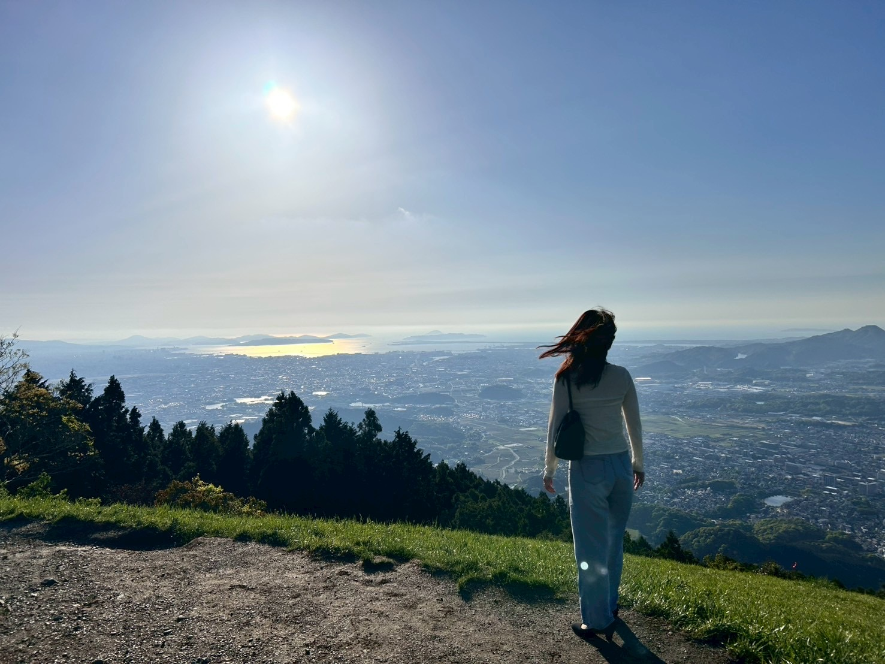

PORTFOLIO
ECモール運営経験を活かし、 Webデザイン・バナー制作・サイト更新を行っています。
Photoshop / Illustrator / HTML / CSS 使用可能。

福本 美織
ふくもと みおり
長崎県佐世保市出身。
通販会社にて約4年間、ECモール運営に従事。 商品画像制作、バナー制作、ページ更新、画像加工などを担当しておりました。
Photoshop・Illustratorを使用したデザイン制作に携わる中で、Webデザインへの興味を持ち、現在はHTML/CSSを習得しポートフォリオ制作を行っております。
また、CanvaやPremiere Proを使用した動画編集にも取り組んでおります。
“見やすさ”だけでなく、“伝わりやすさ”を意識したデザイン制作を心がけています。
- デザイン： Photoshop,Illustrator,Canva,Figma
- コーディング： HTML, CSS, JavaScript, PHP, WordPress
- 動画編集： Premiere Pro,Canva